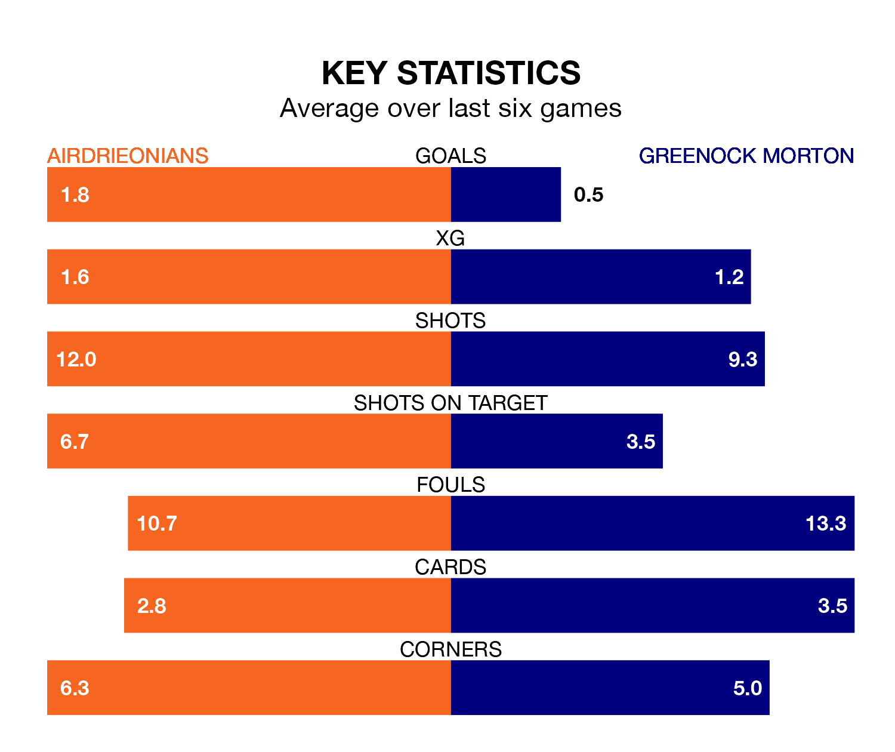

Two of the Championship's meanest defences go head-to-head at the Excelsior Stadium on Saturday, when Greenock Morton visit Airdrieonians.
Only one side – Dundee United – has conceded fewer goals than Greenock Morton to date: the away side have let in just 34 goals in 30 games.
Airdrieonians have conceded 35 goals in 30 games, giving them the third tightest back line so far this season.
Key to the Ton's home form has been Ryan Mullen, who has allowed 0.55 goals past him per 90 minutes, compared to 1.01 for Joshua Rae in the opposite net.
In the last 10 years, Airdrieonians and Greenock Morton have played each other on 10 occasions. Airdrieonians won three of them, Greenock Morton five, and they drew twice.
On average, Airdrieonians scored 0.6 goals and the Ton 1.0 in those matches.
Their last meeting was on February 24, when Greenock Morton won 2-1 at home.
Airdrieonians are in reasonable form in the Championship, with three wins and two draws from their last six games.
With a win and a draw over that period, Greenock Morton's form is much worse – they have taken four points from 18, compared to the home team's 11.
In Robbie Muirhead, the Ton have one of the league's most on-form strikers so far this season. He has notched 11 goals in 27 appearances, to sit fifth in the scoring charts.
Airdrieonians's top scorers, with five goals each, are Nikolay Todorov, Callum Gallagher and Craig Watson.
Airdrieonians are fourth in the table after 30 games, of which they have won 12 and drawn six, earning 42 points.
The visitors are two places behind the hosts in sixth, with 11 wins and seven draws putting them on 40 points.
Airdrieonians's last match was on Tuesday, a 2-1 win against Arbroath, with Callum Fordyce and Gabriel McGill getting the goals for Airdrieonians.
Greenock Morton beat Queen's Park 2-0 last time out, on Saturday, with Kirk Broadfoot and Muirhead on the scoresheet.
Saturday's match will be refereed by Don Robertson, who has taken charge of six Championship games so far this season, issuing no red cards and booking 15 players. He has awarded two penalties.
The last Airdrieonians game Robertson refereed was a 2-1 away win against Queen's Park on December 30. He is yet to oversee a match featuring Greenock Morton this season.
Updated: 16:41 (UTC), 04/04/24